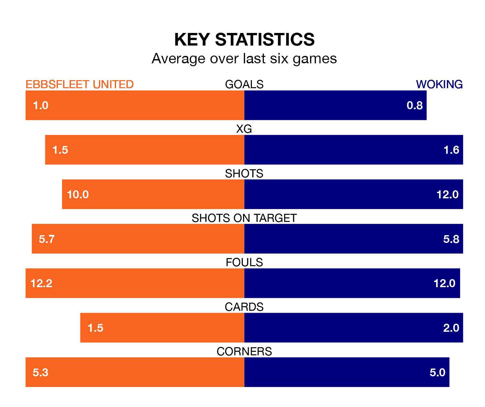

Struggling Ebbsfleet United face Woking at the Kuflink Stadium on Tuesday looking to build on a win in their last league outing.
After securing all three points with a 3-0 victory over Eastleigh on Saturday, Ebbsfleet sit 21st in the National League.
They travel to play a Woking side 22nd in the standings, who lost in their last match, 2-1 against Halifax Town.
In the last 10 years, Ebbsfleet and Woking have played each other on seven occasions. Ebbsfleet won three of them, Woking one, and they drew three times.
On average, Ebbsfleet scored 1.3 goals and the Cardinals 1.0 in those matches.
Their last meeting was on September 19, when they played out a 1-1 draw.
With 33 goals in 33 games so far this season, Woking are the league's second-lowest scorers with 1.0 goals per game. But they are conceding fewer than average too, letting in 42 goals at a rate of 1.3 per game.
Ebbsfleet are also below average scorers, with 1.3 goals per game, compared to a league average of 1.5. They have conceded 1.7 goals per game.
United are in mixed form in the National League, with two wins and two draws from their last six games.
With two wins and a draw over that period, the Cardinals's form is slightly worse – they have taken seven points from 18, compared to the home team's eight.
Updated: 12:18 (UTC), 19/02/24